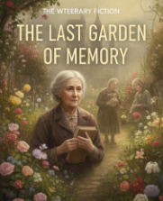
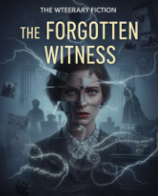
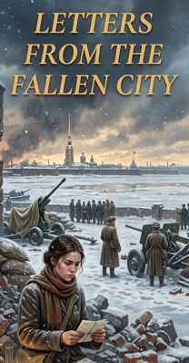
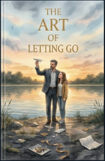
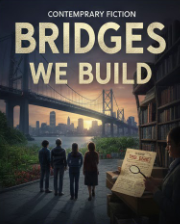
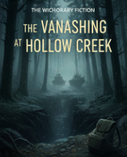
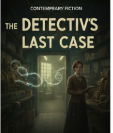

My Books
Explore my collection of fiction across multiple genres
Literary Fiction
Deep, character-driven stories with complex themes
The Weight of Silent Words
A profound story about a retired literature professor who discovers his late wife's hidden journals, revealing secrets that challenge everything he thought he knew about their 40-year marriage and force him to confront his own unspoken truths.
$220.99
Shadows Between Us
An introspective tale of two estranged siblings who reunite after their mother's death, navigating grief, childhood trauma, and the complicated love that binds families together even when they're broken.
$230.99

The Last Garden of Memory
A poetic exploration of an elderly woman with early dementia who tends to her garden while her memories fade, weaving between past and present as she holds onto the essence of who she once was.
$212.99
Psychological Thriller
Suspenseful mind-bending stories
The Mirror's Truth
A woman wakes up in a psychiatric facility with no memory of how she got there, but everyone insists she committed a terrible crime. As fragmented memories return, she questions whether she can trust her own mind—or if someone is manipulating her reality.
$223.99
Whispers in Room 304
A hotel night manager begins hearing voices from Room 304—a room that's been locked for twenty years after a mysterious guest disappeared. When she finally enters, she uncovers a dark conspiracy that puts her own life in danger.
$242.99

The Forgotten Witness
A forensic psychologist working on a high-profile murder case realizes the key witness may have witnessed something far more sinister than the crime itself, and now both their lives are at risk from an unseen predator.
$232.99
Historical Fiction
Stories set in compelling past eras

Letters from the Fallen City
Set during the siege of Leningrad in World War II, this novel follows a young woman who risks everything to deliver letters between separated families, becoming a lifeline of hope in humanity's darkest hour.
$250.99
The Clockmaker's Daughter
In 1880s Victorian London, a clockmaker's daughter with an extraordinary gift for mechanical invention must navigate a male-dominated world while uncovering the truth about her mother's mysterious disappearance years earlier.
$252.99
Echoes of 1942
A dual-timeline story connecting a modern-day historian researching World War II resistance movements with a courageous female spy operating behind enemy lines, whose classified mission could change how we understand the war.
$247.99
Contemporary Fiction
Modern, relatable stories about today's world
Coffee Stains and Second Chances
A burned-out advertising executive quits her job and opens a small coffee shop in her hometown, reconnecting with her past, healing old wounds, and discovering that success isn't always measured in promotions and paychecks.
$212.99

The Art of Letting Go
After a devastating divorce, a single father learns to rebuild his life while raising his teenage daughter, exploring themes of masculinity, vulnerability, and what it truly means to be present for the people you love.
$244.99

Bridges We Build
An architect designing a controversial bridge project finds her professional and personal life colliding when she must choose between her career ambitions and the community fighting to preserve their neighborhood's heritage.
$230.99
Mystery/Crime Fiction
Detective or crime-solving narratives

The Vanishing at Hollow Creek
When three hikers disappear without a trace in a small mountain town, a disgraced detective returns to her hometown to investigate, uncovering a pattern of disappearances spanning decades and a truth the town has been hiding.
$235.99

Detective Maya's Last Case
On the eve of her retirement, Detective Maya Cruz takes on one final case—a cold murder from 15 years ago. But as she digs deeper, she realizes this case is connected to the one mistake that has haunted her entire career.
$211.99
Secrets of the Harbor
A maritime investigator uncovers evidence of smuggling operations in a picturesque coastal town, but the deeper she investigates, the more she realizes everyone—including her own family—may be involved in the conspiracy.
$254s.99